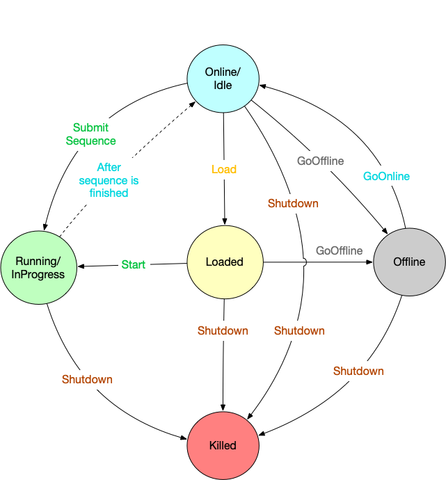
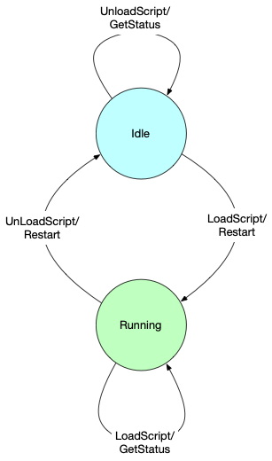

Sequencer Lifecycle
The Sequencer lifecycle is implemented as a Finite State Machine. At any given time a Sequencer is in exactly one of those states. The state of the Sequencer is tied to whether or not it has received a Sequence and whether or not the Sequence has started executing. Sequencer supports a set of commands/messages, and on receiving those commands, it takes an action and transitions to other states.
Following are the states supported by the Sequencer:
- Idle/Online: This is the default state of the Sequencer. A Sequencer is idle when it is starts up. It has a Script since it has been loaded by the Sequence Component, but there’s no Sequence under execution. A Sequencer can come to the idle state from the following situations:
- when the Sequencer starts up for the first time with a Script loaded
- when the Sequencer has finished execution of a Sequence
- when the Sequencer was offline, and a goOnline command is sent
In this state, the Sequencer can only receive a Sequence, goOffline, or shutdown, in which the Sequencer transitions to the Loaded, Offline, and Killed states, respectively.
-
Loaded: A Sequencer is in loaded state when a Sequence is received and ready for execution, but execution of the Sequence hasn’t started. A separate
startcommand is expected to start execution of the Sequence. All sequence editor actions (for e.g. add, remove, reset) are accepted in this state. From this state, the Sequencer can go to theInProgressstate on receiving astartcommand, or it could go to theOfflinestate ifgoOfflinecommand is sent. On receiving aresetcommand, which discards all the pending steps, the Sequencer will go toIdlestate. -
InProgress/Running: The Sequencer is in the
Runningstate only when it is executing a Sequence. All sequence editor actions (for e.g. add, remove, reset) are accepted in this state. From theRunningstate, the Sequencer can go toIdlestate on completion of a Sequence, or it can beshutdown. A Sequencer cannot goOfflinefrom this state; the Sequencer must first to go to theIdlestate and thenOffline. -
Offline: The Sequencer goes to the
Offlinestate only on receiving agoOfflinecommand, which can either come from an upstream Sequencer, or from a user through the admin dashboard. In this state, only a few commands are excepted (for eg. goOnline, shutdown, status etc). -
Killed: This is the final state of the Sequencer, achieved when receiving a
shutdowncommand. The shutdown command can be sent in any state, hence a Sequencer can transition to this state from any other state. However, a Sequencer doesn’t stay in this state long; when a Sequencer is killed, it is removed from the Location Service, and ActorSystem is shutdown, effectively destroying the Sequencer.

Sequence Component Lifecycle
The Sequence Component also has a lifecycle, but it is simpler than the Sequencer lifecycle. The following figure shows the Sequence Component has two states: Idle and Running.
-
Idle: This is the default state of a Sequence Component when it is started. It is ready for the loading of a Script that will create a Sequencer, which occurs on a
LoadScriptcommand. If successful, the Sequence Component transitions to theRunningstate. While in theIdlestate, the Sequence Component responds to theGetStatusmessage and ignores theUnloadScriptmessage without error. -
Running: Once a Sequence Component has successfully loaded a Script, it is in the
Runningstate. The new Sequencer will be available to process Sequences until it receives anUnloadScriptmessage and transitions back to theIdlestate. While in theRunningstate, the Sequence Component can also receive aRestartmessage, which restarts a Sequencer by unloading the Script and shutting down the Sequencer, immediately followed by the loading of the Script again. This has the effect of initializing the script. TheLoadScriptmessage is ignored without error while in theRunningstate. The Sequence Component responds successfully to theGetStatusmessage.
